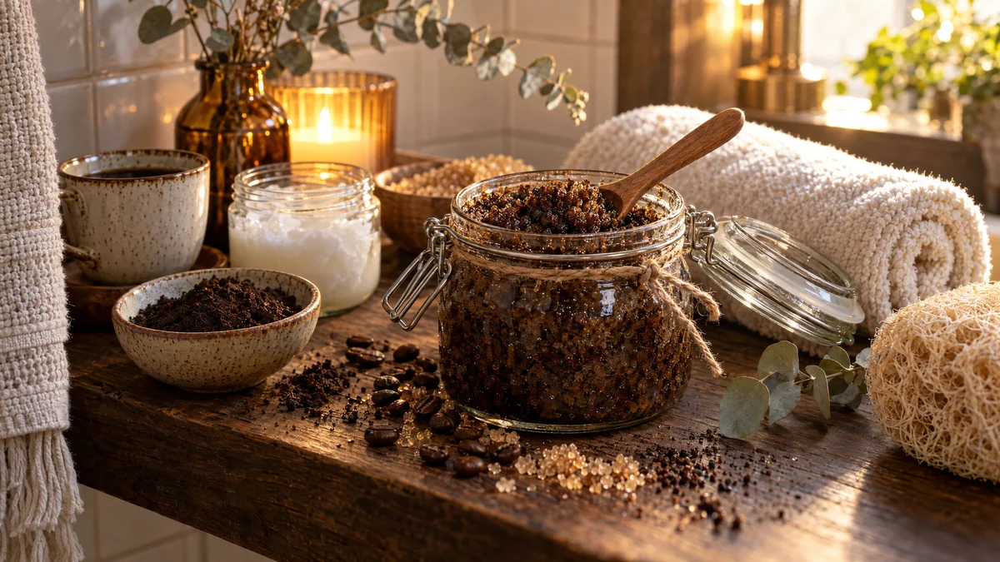

RESTFEST · HEMMASPA
Kaffeskrubb av gårdagens kaffesump
Kaffesumpen från morgonens bryggare blandas med farinsocker och kokosolja till en doftande skrubb som gör huden len och glansig. Den fylls på en vacker glasburk med en träsked. Det du brukar slänga blir en present du gärna ger bort.
- Förberedelse
- 10 min + några timmars torktid
- Verkningstid
- 2–3 min
- Räcker till
- 3–4 behandlingar (ca 2 dl)
- Nivå
- Nybörjare
 Det här behöver du
Det här behöver du
Tryck på + vid det du behöver köpa.
Gör så här
- Bred ut kaffesumpen på en tallrik och låt den torka några timmar eller över natten. Torr sump möglar inte lika lätt.
- Smält kokosoljan försiktigt i en kastrull eller i mikron.
- Blanda kaffesump, farinsocker, vaniljsocker och den smälta oljan i en skål.
- Fyll skrubben i en ren glasburk med lock.
- Använd skrubben i duschen. Ta en matsked i taget och massera den i cirkulära rörelser över fuktig hud i 1–2 minuter, särskilt på armbågar, knän, lår och vader.
- Skölj av med ljummet vatten och klappa torrt. Oljan lämnar huden återfuktad, så du behöver ofta ingen extra kräm.
Presentation och användning
- Fyll skrubben i en glasburk med patentlock och lägg en liten träsked bredvid.
- Knyt ett linnesnöre runt burken och stick in en kanelstång eller en torkad apelsinskiva som dekoration. Lägg den inte i skrubben.
- Fint som julklapp eller värdinnepresent, med en handskriven etikett.
- Kokosoljan stelnar i rumstemperatur, så skrubben blir fast. Ta upp den med skeden, den smälter mot den varma huden.
Bra att veta
- Använd inte skrubben i ansiktet, den är för grov, och inte på irriterad eller trasig hud.
- Duschgolvet blir halt av oljan, så var försiktig och skölj golvet efteråt.
- Kaffesump kan täppa till avlopp. Använd små mängder och spola rikligt med varmt vatten.
- Förvara burken svalt och använd skrubben inom två veckor. Släng den om den luktar unket eller får mögel.